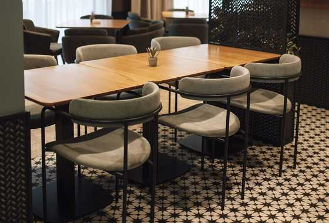

お店のInstagramでは、現在「臨時休業中」と案内されています。ご来店前に必ずInstagramでご確認ください。

ABOUT
お店のこと
U.R.Mは、兵庫県加西市の上道山町にある、赤い屋根の古民家を使ったカフェです。2022年10月1日にオープンしたと、グルメサイトに記載があります。口コミでは、山あいの自然に囲まれつつ道路から分かりやすい場所にあり、家庭的でゆったりした雰囲気と紹介されています。
お客様の口コミには、オーガニックにこだわっているようだ、ケーキはあっさりした甘さ、との声もあります。このページはその印象をもとに、木のぬくもりと土の色、屋根の赤を配色にしています。
屋号「U.R.M」の意味・由来は確認できていません。



MENU
メニュー
グルメサイトの写真などから、次のようなメニューがあるようです。価格・提供状況は準備中です。
営業時間・定休日:準備中


VOICE
口コミ
イメージ例
古い家の空気がやさしくて、つい長居してしまいそう。甘さが控えめで、コーヒーによく合いそうです。
イメージ例
山あいの静かな道を抜けた先に、赤い屋根が見える。そんな寄り道がしたくなるお店です。
イメージ例
パフェのグラノーラを量り売りでも買えるのが楽しい。家でも朝ごはんに食べたいです。
上の口コミは制作側が作成したイメージ例で、実在のお客様の声ではありません。


ACCESS
アクセス
| 住所 | 〒675-2453 兵庫県加西市上道山町884-1 |
|---|---|
| 電話 | 準備中 |
| 営業時間 | 準備中 |
| 定休日 | 準備中 |
| @u.r.m.kamimitchama(臨時休業の案内が出ています) |